ueberblick
🔄 Agentischer Arbeitsablauf
Prompt
Aufgabe formulieren
→
Generieren
KI erstellt Code
→
Verstehen
Code lesen & analysieren
→
Verifizieren
Anforderung prüfen
→
Iterieren
Verbessern & anpassen
Vorstellung
Prof. Dr.-Ing. habil. Jörn Plönnigs
KI für Digitales Bauen
Büro: Justus-von-Liebig-Weg 2, Raum 114
Email: Joern.Ploennigs@uni-rostock.de
Telefon: 0381 498-3500
Zielsetzung
- Verständnis und Kenntnisse der Grundlagen der Programmierung und Datenbanken aneignen
- Aneignen praktischer Fähigkeiten, um ingenieurtechnische Probleme mit Software zu lösen
- Kennenlernen aktueller Ansätze und Technologien in Softwareentwicklung
Lernziele: KI-gestütztes Programmieren
Was Sie lernen:
- KI-generierten Python-Code lesen und verstehen
- Code für die ingenieurtechnische Anforderung modifizieren
- Korrektheit und Qualität verifizieren
Warum dieser Ansatz:
- KI-Tools sind Standard in der Ingenieurpraxis
- Ingenieure müssen KI-Output beurteilen, nicht nur nutzen
- Verständnis von Code ist wichtiger denn je
Der Ingenieur als Architekt und Verifizierer
KI generiert Code — der Ingenieur ist:
- Auftraggeber und Architekt
- Leser und Versteher
- Prüfer und Verifizierer
Nicht: blindes Ausführen von KI-Output
Symbollegende
Diese Symbole erscheinen im Kurs und zeigen, was für ein Konzept gerade behandelt wird:
| Symbol | Konzept |
|---|---|
|
Variable / Wert |
|
Datentyp |
|
Objekt / Entität |
|
Beziehung |
|
Funktion |
| Symbol | Konzept |
|---|---|
|
Algorithmus / Zyklus |
|
Anforderung |
|
Test / Verifikation |
|
Datenstruktur |
|
Datenbank |
Themen ≡
Ablauf
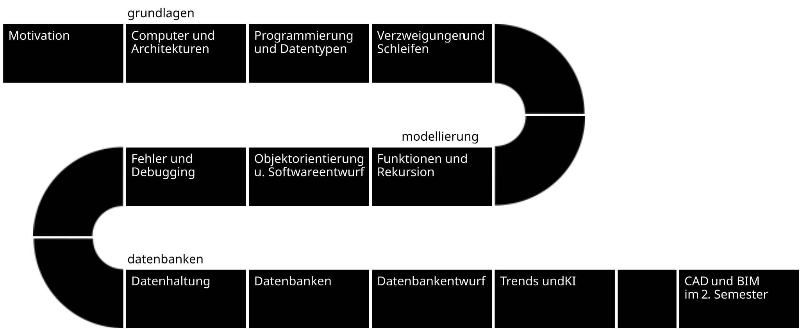
Übungen
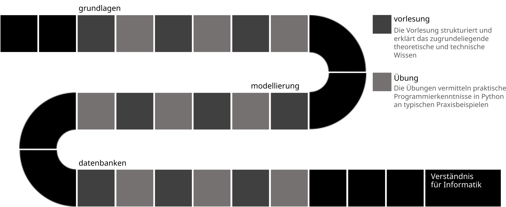
Vorlesungsfolien
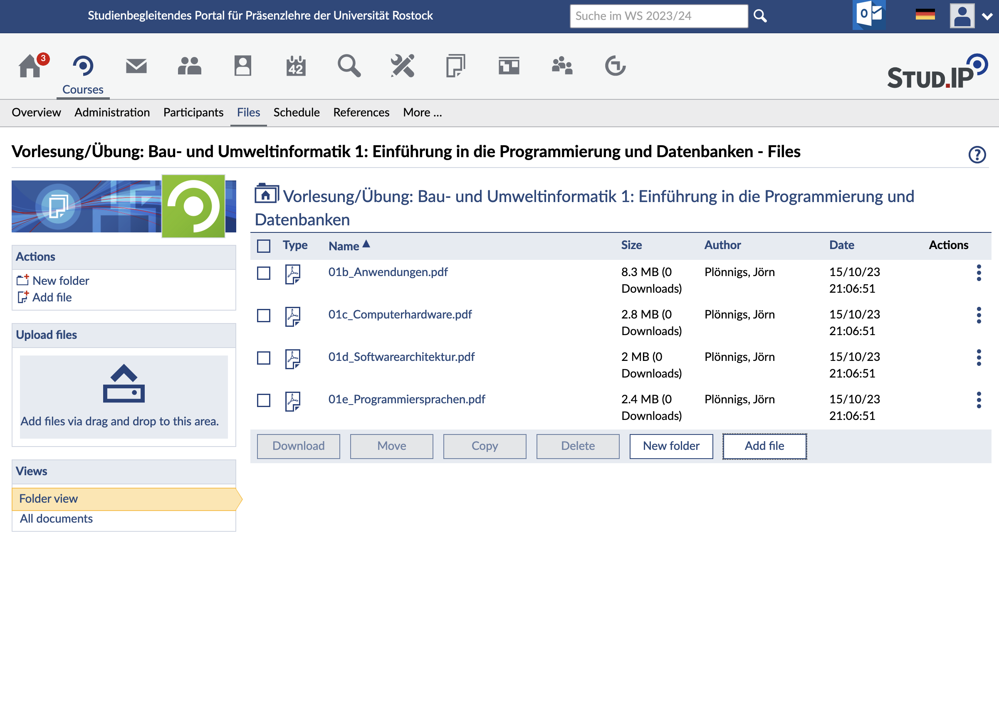
Vorlesungsdokumentation
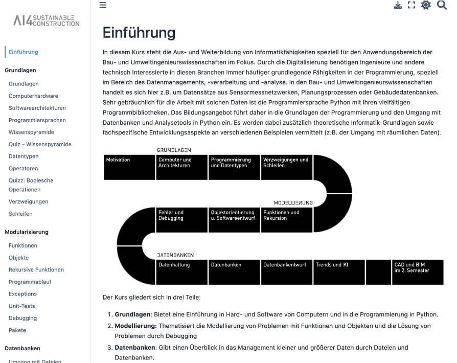
Übungen
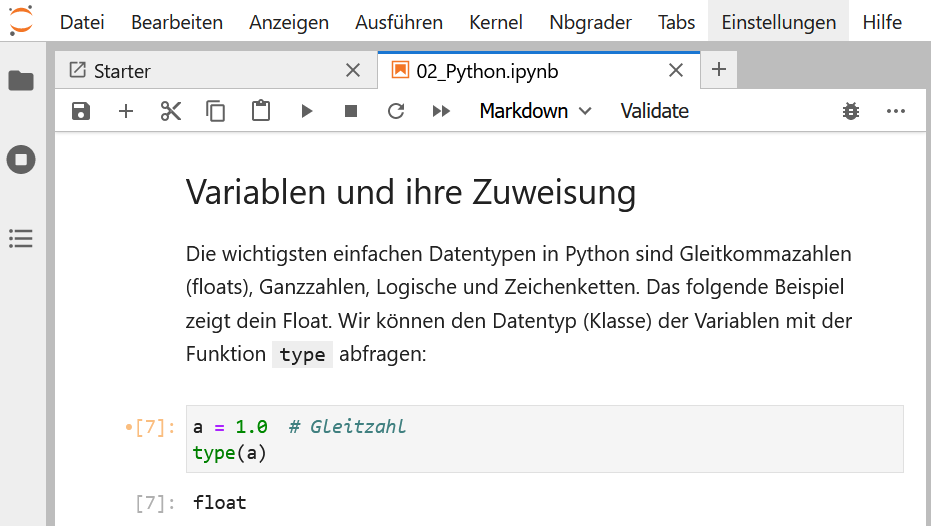
Ab nächster Woche
Konsultation (PC-Pool 1) Mittwoch 11:15 - 12:45 Uhr
Digitale Übung:
- Online Umgebung
- Übungsvideos
Übung
Vorstellung
Dr.-Ing. Markus Berger
KI für Digitales Bauen
Büro: Justus-von-Liebig-Weg 2, Raum 107
Email: Markus.Berger@uni-rostock.de
Telefon: 0381 498-3503
Zielsetzung
In der Vorlesung gelernte Programmierkonzepte
- wiederholt praktisch anwenden
- auf andere Probleme beziehen
Zielsetzung 2
Warum Programmieren lernen als Ingenieur?
Verständnis der Grundelemente des Programmierens
Kenntnis der üblichen Schritte in einem Softwareprojekt
Erfahrung mit dem Suchen nach Lösungen
Strategien Erlernen wie Probleme behandelt werden können
Im späteren Verlauf: Die Systematik hinter Software verstehen.
Grundlagen aneignen - von denen aus weitergearbeitet werden kann!
Ablauf - Zwei Teile
Übungsvideo
- Ansehen
- Selbst mitprogrammieren um die Ansätze zu Erlernen
Aufgabe
- Eigene Lösungen überlegen oder recherchieren
- Beide Teile müssen abgegeben werden!
- Gruppenarbeit ist nicht vorgesehen!
Konsultation
Fragen an: Markus Berger
Ab nächster Woche
- Mittwoch 11:15–12:45 Uhr in PC-Pool 1 und 2
- Klären von Fragen zu den Videos und den Aufgaben
Markus.Berger@uni-rostock.de
Abgabe
Übungsvideos:
- Veröffentlichung immer Montags
- Konsultation immer Mittwochs
- Abgabe immer Montags
Prüfungszulassung
Hausaufgaben werden nicht benotet
Bewertet stattdessen mit Erfüllt / Nicht-Erfüllt der Aufgabe (Pro gesamter Übung, keine Teilleistungen)
Am Ende des Semesters müssen mindestens 50% der Übungen erfüllt sein
Umfangreichere Aufgaben bringen dabei mehr Prozente
| Thema | Gewichtung |
|---|---|
| Grundlagen | |
| Python & Datentypen | 5% |
| Operatoren, Verzweigungen & Schleifen | 5% |
| Funktionen & Objekte | 5% |
| Algorithmen | 5% |
| Erweitertes | |
| Fehler & Tests | 15% |
| Entwurf | 15% |
| Datenhaltung | 20% |
| Erweitertes | |
| Datenbankanfragen | 15% |
| Datenbankentwurf | 15% |
Online Python IDE - Jupyter Books
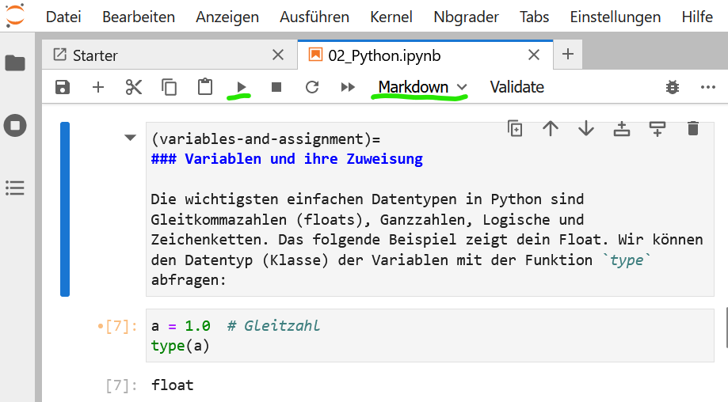
Anmeldung bei Jupyter & Abgabe
Account erstellen in der nächsten Woche unter: https://ml-lab.ai4sc-lectures.auf.uni-rostock.de/
Mit folgendem Nutzernamen: „vorname_nachname”
Einführung dann im ersten Übungsvideo
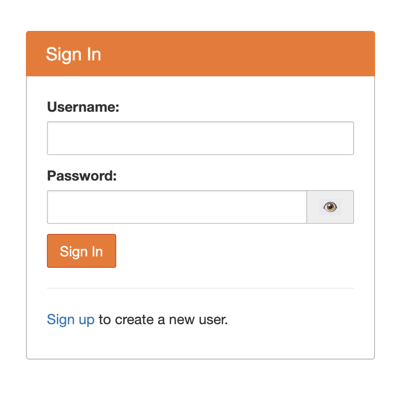
KI: Architekt und Verifizierer, nicht Ausführender
KI generiert Code — das ist der neue Standard in der Ingenieurpraxis
Ihre Aufgabe: den generierten Code lesen, verstehen und verifizieren
Grundverständnis von Python ist Voraussetzung, um KI-Output beurteilen zu können
Der agentische Zyklus 🔄 (Prompt → Generieren → Verstehen → Verifizieren → Iterieren) ist Ihre Arbeitsmethode
Am Ende eine Extra-Vorlesung + Übung zum Einsatz von KI-Werkzeugen
Achtung: In der Klausur müssen Sie signifikantes Programmierverständnis zeigen — die Übungen sind deshalb unbedingt selbst zu erfüllen!
Hausaufgaben
Abrufen von Aufgaben
Hausaufgaben können auf der JupyterLab-Plattform herunterladen, bearbeiten und abgeben werden
- Menüpunkt
Nbgrader/Assignments→ wichtigste Option, zeigt die Seite mit den Aufgaben - Menüpunkt
Nbgrader/Courses→ listet alle belegten Kurse - Menüpunkt
Nbgrader/Formgrader→ nur für Lehrende, zum Einsehen und Bewerten der studentischen Abgaben
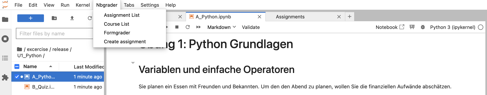
Nbgrader menu
- Menüpunkt
Nbgrader/Assignments→ Ansicht der aktuellen Aufgaben öffnet sich - Mit „fetch” → ausgewählte Aufgabe herunterladen
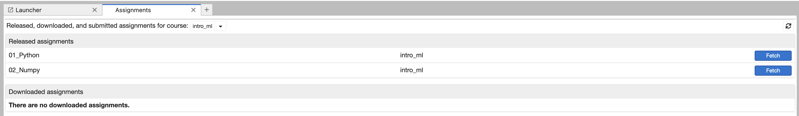
Nbgrader: Available assignments
- Nach dem Herunterladen erscheint die Aufgabe in der Liste „Downloaded Assignments”
- Klick auf den blauen Aufgabennamen → öffnet den Unterordner der Aufgabe
- Im Unterordner: alle Notebooks und zugehörigen Dateien sichtbar
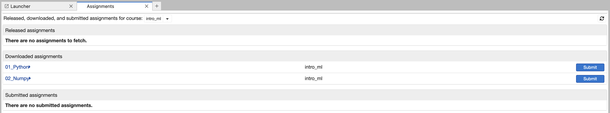
Nbgrader: Downloaded Assignments
Bearbeiten von Aufgaben
- Lesen sie die Aufgabenstellung durch
- Ersetzen Sie
YOUR CODE HEREmit richtigem Code - Ersetzen Sie
YOUR ANSWER HEREmit einer Textantwort - Löschen sie ggf.
raise NotImplementedError(). - Führen sie die Zelle mit
Shift+Enteraus. - Achten Sie darauf, dass die Ausführung erfolgreich war.
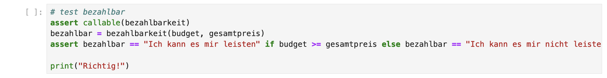
Nbgrader menu
- Auf jede zu ergänzende Code-Zelle folg eine Test-Zelle.
- Diese können Sie nicht bearbeiten.
- Aber die Ausführung zeigt Ihne ob sie richtig lagen.
Nbgrader menu
Einreichen von Aufgaben
- Vor Abgabe jedes Notebook validieren
- Schaltfläche im Menü zum Starten der
Validierungverwenden- Erfolgreiche Validierung → Meldung: “Success! Your notebook passes all the tests.”
- Fehlgeschlagene Validierung → Bericht mit den aufgetretenen Fehlern wird angezeigt
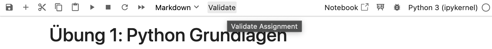
Nbgrader menu
- Nach erfolgreicher Validierung aller Notebooks → Schaltfläche „Submit” betätigen
- Aufgabe wird eingereicht
- Eingereichte Aufgabe erscheint in der Liste „Submitted Assignments”
Nbgrader menu
Server herunterfahren
- JupyterLab-Umgebung ordnungsgemäß beenden, wenn die Arbeit abgeschlossen ist
- Über Menüpunkt
File/Hub Control Panelin die Serverkontrollansicht wechseln - Server mit
Stop my Serverbeenden
Motivation
Hörsaalfrage {background=“#FFD966”?“Computer science is no more about computers than astronomy is about telescopes.”, Edsger W. Dijkstra”}
Was ist „Informatik
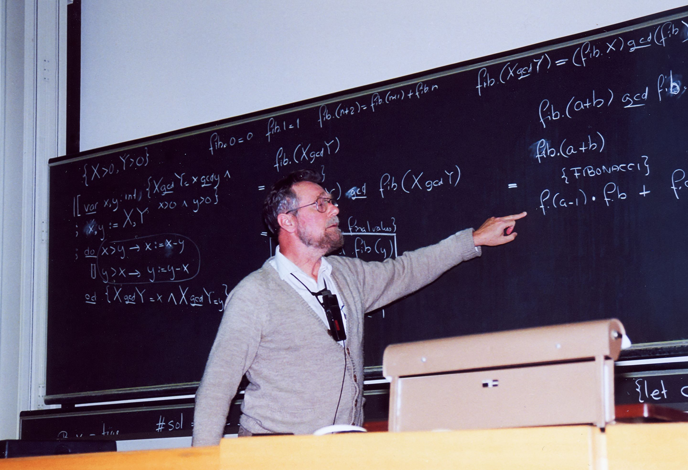
Definition - Informatik
Informatik
Informatik ist die Wissenschaft von der systematischen Verarbeitung von Informationen.
Ursprung: Mathematik (Logik, Algorithmen) + Elektrotechnik (Hardware)
Wo brauchen Ingenieure Informatik?
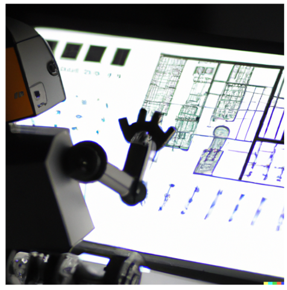
- Computer Aided Design
- Virtuelle Umgebungen
- Tragwerksplanung
- …
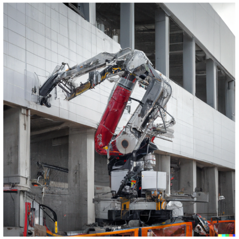
- Bauprozessautomation
- Messungen zur Abnahme
- Baurobotik
- …
- Geoinformationsysteme
- Facility Management
- Gebäudeautomation
- …
Entwurf: CAD - Computer Aided Design
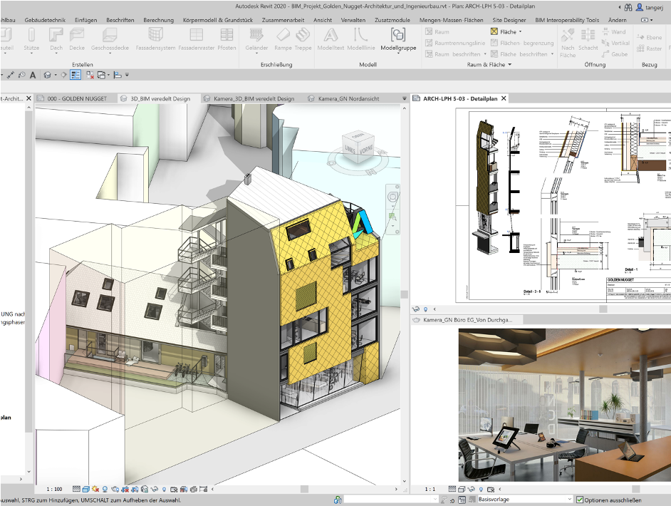
Software-Anwendungen zum Entwerfen, Konstruieren und Präsentieren von Konstruktionszeichnungen und Karten, sowohl für 2D- als auch für 3D-Modelle. (SoftSelect Glossar / Lexikon)
Entwurf: Virtuelle Umgebungen
Anwendungen, die es erlauben Entwürfe in VR (Virtual Reality) oder AR (Augmented Reality) zu visualisieren und zu erkunden.
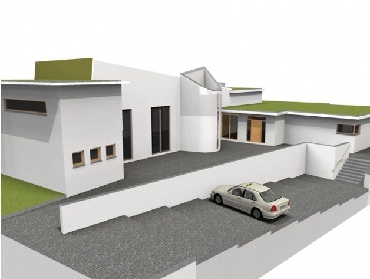
Entwurf: Tragwerksplanung
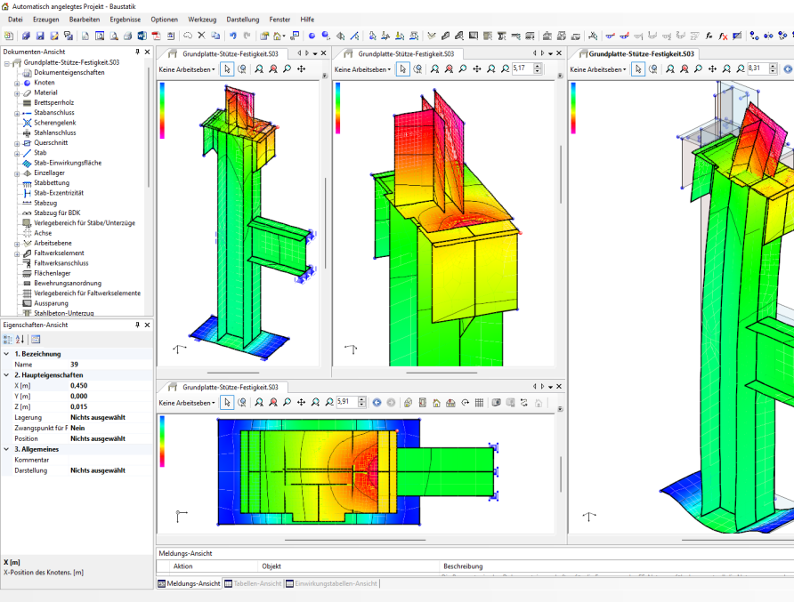
Ziel seiner Tragwerksplanung ist es, die erforderliche Tragfähigkeit und Gebrauchstauglichkeit einer Baukonstruktion während der vorgesehenen Lebensdauer mit den Forderungen nach Wirtschaftlichkeit und Ästhetik in Einklang zu bringen. DeWiki
Bau: Bauprozessautomatisierung
Automatisierung verschiedener Schritte
- Bautagebuch
- Bauzeitenmanagement
- Bauprojektmanagement
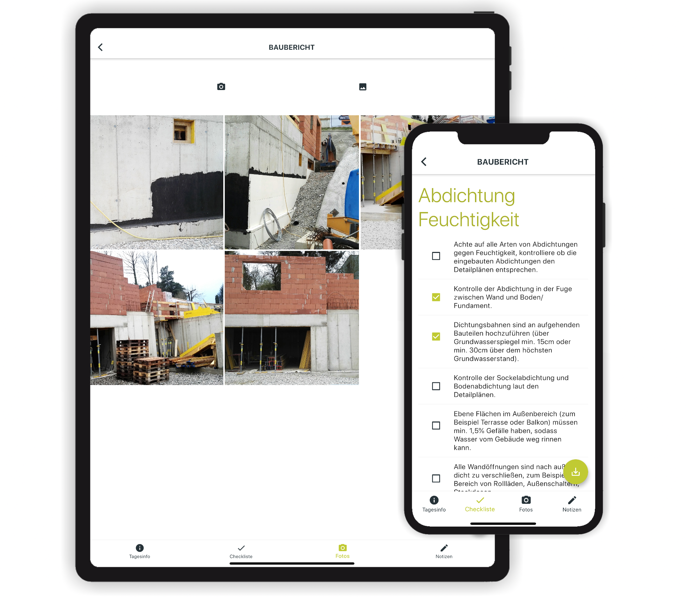
Bau: Baurobotik
Das Einsatzgebiet von Robotern im Bauhauptgewerbe ist grundsätzlich unabhängig vom bauspezifischen Geschäftsmodell bzw. unabhängig vom Segment, der Aktivität und der eigentlichen Arbeitstätigkeiten.
Betrieb: GIS - Geoinformationssystem
Geoinformationssysteme sind Informationssysteme zur Erfassung, Bearbeitung, Organisation, Analyse und Präsentation räumlicher Daten. DeWiki

Betrieb: Gebäudeautomation
Gesamtheit von Überwachungs-, Steuer-, Regel- und Optimierungseinrichtungen in Gebäuden. DeWiki
Betrieb: CAFM - Computer Aided Facility Management
Facilitymanagement bezeichnet die Verwaltung und Bewirtschaftung von Gebäuden sowie deren technischen Anlagen und Einrichtungen (englisch facilities). CAFM ist die Unterstützung des Facilitymanagements durch ein Computerprogramm. DeWiki
Literaturempfehlungen
Python 3: das umfassende Handbuch; Ernesti, Johannes, Kaiser, Peter, 2020
Datenbanken: Konzepte und Sprachen; Saake, Gunter, Sattler, Kai-Uwe, Heuer, Andreas, 2018
Empfehlung: Verschiedene Online-Tutorials nutzen! https://docs.python.org/3/tutorial/ & https://www.w3schools.com/python/
Langfristig am wichtigsten: Ins kalte Wasser springen!
Questions